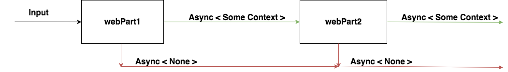

Beer, Meditation & Railway Oriented Programming
By Moko Sharma
About Me
-
Graduated [ May 2015 ]
-
Developer @ SIG [ August 2015 ]
-
Discovered F# [ December 2015 ]
-
Became an Enemy of Mutable State [ First Null Reference Exception ]

Agenda
-
ROP
-
Beer
-
Suave.IO
-
Meditation
Railway Oriented Programming
Exceptions, Exceptions Everywhere
What is ROP?
Clean
Functional
Robust
Way of Dealing with the Unhappy Path
The Model
Bind [ >>= ]
Switch [ >=> ]
Tired Hands Fun Fun
Tired Hands Fun Fun
Timer Callback [ Happy Path ]
-
Scrape
-
Compare
-
Try Alert
scrapeWebsiteToCreateBeerInfo
>=> compareWithPreviousBeerInfo
>=> tryAlertByText
Errors / No-Ops [ Unhappy Path ]
-
Scrape - Web Errors
-
Compare - I/O Errors
-
Alert - API Errors
-
No Difference Found
type UnhappyPathMessages =
| WebError of string
| IOError of string
| APIError of string
| NoDifferenceFound
ROP View

Libraries Used
Chiron for JSON
Loggary for Logging
C# Twilio API
Next Steps
-
Deploy as an Azure Function
-
Manayunk Brewery
-
Distribution of Updates -> Machine Learning
Suave.IO

Is a ..
Non-Blocking,
Lightweight,
Functional-First,
F# Web Development Library
Web-Server Function

Web-Server Function

Request -> Response option
Request -> Async< Response option >
Simplified Suave Types - I
Request
type RequestType = GET | POST | .. type Request = { Route : string; Type : RequestType }
Response
type StatusCode = int type Response = { Content : string; StatusCode : StatusCode }
Simplified Suave Types - II
Context
type Context = { Request : Request; Response : Response }
Async Context
Context -> Async< Context >
Option Based Async Context
Context -> Async< Context option >
Simplified Suave Types Combined
type WebPart = Context -> Async< Context option >
Web-Part Combinators
let compose webPart1 webPart2 context : WebPart =
async {
let! firstResult = webPart1 context
match firstResult with
| None -> return None
| Some f ->
let! secondContextResult = webPart2 f
return secondContextResult
}
let (>=>) compose
ROP View
A Suave Web-Part Example
let OK content context : WebPart =
let response = { Content : content; StatusCode = 200 }
{ context with Response = response }
|> Some
|> async.Return
Combined:
( OK "All" ) >=> ( OK "Your" ) >=> ( OK "Base" ) ...
Filters
GET >=> path "/somePath" >=> OK "GET"
POST >=> path "/somePath" >=> OK "POST"
PUT >=> path "/somePath" >=> OK "PUT"
DELETE >=> path "/somePath" >=> OK "DELETE"
HEAD >=> path "/somePath" >=> OK "HEAD"
Remember..
type RequestType = GET | POST | .. type Request = { Route : string; Type : RequestType }
From Web-Parts to Web Applications
let app : WebPart = choose [
GET >=> path "/resource1" >=> OK "r1: GET Success"
POST >=> path "/resource1" >=> OK "r1: POST Success"
path "/resource2" >=> choose [
GET >=> OK "r2: GET Success"
POST >=> OK "r2: POST Success"
]
]
// Behind the scenes..
execute context app
Meditation Fun Fun
Rest Resource
Talk Inspired by:
Scott Wlaschin's Railway Oriented Programming
Tired Hand's Awesome Beer Selection
Meditation
Thank you!
Questions?